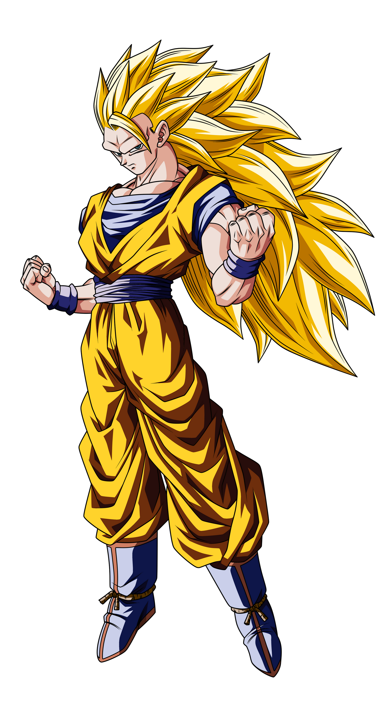

<div class="container mx-auto">
    
      <p class="text-base text-gray-800">
        El Supersaiyano 3, es la forma más fuerte de la línea de estados 
        tradicionales del Supersaiyano en el manga original y el anime de 
        Dragon Ball Z. 
        Es la tercera forma de Supersaiyano, el sucesor de la primera y 
        segunda transformación (las etapas variantes de la primera no son 
        transformaciones por separado, 
        sino más bien extensiones de la primera).
        Son Goku fue el primero en lograr la forma durante su entrenamiento 
        de siete años en el Otro Mundo y el único que se ha visto usarla en el 
        manga y anime sin que sea una fusión como Gotenks. En varios videojuegos, 
        Vegeta alcanza esta transformación a través de una combinación de 
        frustración extrema y entrenamiento riguroso, Broly también logra
        su propia versión de la misma a través de un gran poder saiyano.
    </p>
</div>

